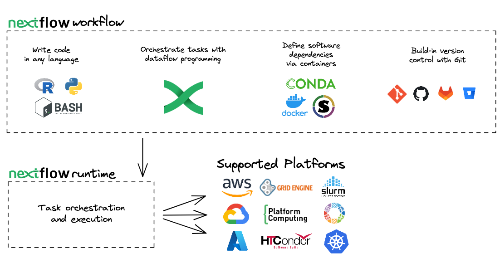

Introduction to Nextflow
!!! clipboard-list “Objectives”
- Learn about the core features of Nextflow
- Learn Nextflow terminology
- Learn fundamental commands and options for executing pipelinesWhat is Nextflow?

Nextflow is a workflow orchestration engine and domain-specific language (DSL) that makes it easy to write data-intensive computational pipelines.
It is designed around the idea that the Linux platform is the lingua franca of data science. Linux provides many simple but powerful command-line and scripting tools that, when chained together, facilitate complex data manipulations.
Nextflow extends this approach, adding the ability to define complex program interactions and a high-level parallel computational environment based on the dataflow programming model.
Nextflow’s core features are:
- Pipeline portability and reproducibility
- Scalability of parallelization and deployment
- Integration of existing tools, systems, and industry standards
Whether you are working with genomics data or other large and complex data sets, Nextflow can help you to streamline your pipeline and improve your productivity.
Processes and Channels
In Nextflow, processes and channels are the fundamental building blocks of a pipeline.

A process is a unit of execution that represents a single computational step in a pipeline. It is defined as a block of code that typically performs one specific task. Each process will specify its input and outputs, as well as any directives and conditional statements required for its execution. Processes can be written in any language that can be executed from the command line, such as Bash, Python, Perl, or R.
Processes in are executed independently (i.e., they do not share a common writable state) as tasks. Multiple tasks can run in parallel, allowing for efficient utilization of computing resources. Nextflow is a top down pipeline manager and will automatically manage data dependencies between processes, ensuring that each process is executed only when its input data is available and all of its dependencies have been satisfied.
A channel is an asynchronous first-in, first-out (FIFO) queue that is used to join processes together. Channels allow data to passed between processes and can be used to manage data, parallelize tasks, and structure pipelines. Any process can define one or more channels as an input and output. Ultimately the pipeline execution flow itself, is implicitly defined by the channel declarations.
Importantly, processes can be parameterised to allow for flexibility in their behavior and to enable their reuse in and between pipelines. Parameters can be defined in the process declaration and can be passed to the process at runtime. Parameters can be used to specify the input and output files, as well as any other parameters required for the process to execute.
Execution abstraction
While a process defines what command or script is executed, the executor determines how and where the script is executed.
Nextflow provides an abstraction between the pipeline’s functional logic and the underlying execution system. This abstraction allows users to define a pipeline once and execute it on different computing platforms without having to modify the pipeline definition.

If not specified, Nextflow will execute locally. Executing locally is useful for pipeline development and testing purposes. However, for real-world computational pipelines, a high-performance computing (HPC) or cloud platform is often required.
Nextflow provides a variety of built-in execution options, such as local execution, HPC cluster execution, and cloud-based execution, and allows users to easily switch between these options using command-line arguments.
You can find a full list of supported executors as well as how to configure them in the Nextflow docs.
Nextflow CLI
Nextflow implements a declarative domain-specific language (DSL) that simplifies the writing of complex data analysis pipelines as an extension of a general-purpose programming language. As a concise DSL, Nextflow handles recurrent use cases while having the flexibility and power to handle corner cases.
Nextflow is an extension of the Groovy programming language which, in turn, is a super-set of the Java programming language. Groovy can be thought of as “Python for Java” and simplifies the code.
Nextflow provides a robust command line interface for the management and execution of pipelines. Nextflow can be used on any POSIX compatible system (Linux, OS X, etc). It requires Bash 3.2 (or later) and Java 11 (or later) to be installed.
Nextflow is distributed as a self-installing package and does not require any special installation procedure.
!!! info “How to install Nextflow locally”
1. Download the executable package using either `wget -qO- https://get.nextflow.io | bash` or `curl -s https://get.nextflow.io | bash`
2. Make the binary executable on your system by running `chmod +x nextflow`
3. Move the nextflow file to a directory accessible by your `$PATH` variable, e.g, `mv nextflow ~/bin/`Nextflow options and commands
Nextflow provides a robust command line interface for the management and execution of pipelines. The top-level interface consists of options and commands.
You can list Nextflow options and commands with the -h option:
nextflow -h```console title=“Output” Usage: nextflow [options] COMMAND [arg…]
Options: -C Use the specified configuration file(s) overriding any defaults -D Set JVM properties -bg Execute nextflow in background -c, -config Add the specified file to configuration set -config-ignore-includes Disable the parsing of config includes -d, -dockerize Launch nextflow via Docker (experimental) [truncated]
Commands: clean Clean up project cache and work directories clone Clone a project into a folder config Print a project configuration [truncated]
Options for a commands can also be viewed by appending the -help option to a Nextflow command.
For example, options for the the run command can be viewed:
```bash
nextflow run -helpconsole title="Output" Execute a pipeline project Usage: run [options] Project name or repository url Options: -E Exports all current system environment Default: false -ansi-log Enable/disable ANSI console logging -bucket-dir Remote bucket where intermediate result files are stored -cache Enable/disable processes caching -disable-jobs-cancellation Prevent the cancellation of child jobs on execution termination -dsl1 Execute the workflow using DSL1 syntax Default: false -dsl2 Execute the workflow using DSL2 syntax Default: false -dump-channels Dump channels for debugging purpose -dump-hashes Dump task hash keys for debugging purpose Default: false [truncated]
!!! question “Exercise”
Find out which version of Nextflow you are using.
??? success "Solution"
You can find out which version of Nextflow you are using by executing:
```bash
nextflow -version
```
You should see the following:
```console title="Output"
N E X T F L O W
version 23.04.4 build 5881
created 25-09-2023 15:34 UTC (26-09-2023 04:34 NZDT)
cite doi:10.1038/nbt.3820
http://nextflow.io
```Managing your environment
You can use environment variables to control the Nextflow runtime and the underlying Java virtual machine. These variables can be exported before running a pipeline and will be interpreted by Nextflow.
For most users, Nextflow will work without setting any environment variables. However, to improve reproducibility and to optimise your resources, you will benefit from establishing some of these.
For example, for consistency, it is good practice to pin the version of Nextflow you are using with the NXF_VER variable:
export NXF_VER=<version number>!!! question “Exercise”
Change the version of Nextflow you are using to `23.04.0` by exporting an environmental variable:
??? success "Solution"
Export the singularity cache using the `NXF_VER` environmental variable:
```bash
export NXF_VER=23.04.0
```
Check that the `NXF_VER` has been applied:
```bash
nextflow -version
```
You should see nextflow update and print the following:
```console title="Output"
N E X T F L O W
version 23.04.0 build 5857
created 01-04-2023 21:09 UTC (02-04-2023 09:09 NZDT)
cite doi:10.1038/nbt.3820
http://nextflow.io
```!!! warning “Environmental variables on NeSI”
The behaviour of Nextflow environmental variables won't work as expected if using a NeSI Nextflow module.Similarly, if you are using a shared resource, you may also consider including paths to where software is stored and can be accessed using the NXF_SINGULARITY_CACHEDIR or the NXF_CONDA_CACHEDIR variables:
export NXF_SINGULARITY_CACHEDIR=<custom/path/to/conda/cache>!!! question “Exercise”
Export the folder `/nesi/nobackup/nesi02659/nextflow-workshop` as the folder where remote Singularity images are stored:
??? success "Solution"
Export the singularity cache using the `NXF_SINGULARITY_CACHEDIR` environmental variable:
```bash
export NXF_SINGULARITY_CACHEDIR=/nesi/nobackup/nesi02659/nextflow-workshop
```
Check that the `NXF_SINGULARITY_CACHEDIR` has been exported:
```bash
echo $NXF_SINGULARITY_CACHEDIR
```!!! tip “How to manage environmental variables”
You may want to include these, or other environmental variables, in your `.bashrc` file (or alternate) that is loaded when you log in so you don’t need to export variables every session.A complete list of environmental variables can be found in the Nextflow docs.
Executing a pipeline
Nextflow seamlessly integrates with code repositories such as GitHub. This feature allows you to manage your project code and use public Nextflow pipelines quickly, consistently, and transparently.
The Nextflow pull command will download a pipeline from a hosting platform into your global cache $HOME/.nextflow/assets folder.
If you are pulling a project hosted in a remote code repository, you can specify its qualified name or the repository URL.
The qualified name is formed by two parts - the owner name and the repository name separated by a / character. For example, if a Nextflow project bar is hosted in a GitHub repository foo at the address http://github.com/foo/bar, it could be pulled using:
nextflow pull foo/barOr by using the complete URL:
nextflow pull http://github.com/foo/barAlternatively, the Nextflow clone command can be used to download a pipeline into a local directory of your choice:
nextflow clone foo/bar <your/path>The Nextflow run command is used to initiate the execution of a pipeline:
nextflow run foo/barIf you run a pipeline, it will look for a local file with the pipeline name you’ve specified. If that file does not exist, it will look for a public repository with the same name on GitHub (unless otherwise specified). If it is found, Nextflow will automatically pull the pipeline to your global cache and execute it.
!!! warning
Be aware of what is already in your current working directory where you launch your pipeline. If your current working directory contains nextflow configuration files you may encounter unexpected results.!!! question “Exercise”
Execute the `hello` pipeline directly from `nextflow-io` [GitHub](https://github.com/nextflow-io/hello) repository.
??? success "Solution"
Use the `run` command to execute the [nextflow-io/hello](https://github.com/nextflow-io/hello) pipeline:
```bash
nextflow run nextflow-io/hello
```
```console title="Output"
N E X T F L O W ~ version 23.04.0
Pulling nextflow-io/hello ...
downloaded from https://github.com/nextflow-io/hello.git
Launching `https://github.com/nextflow-io/hello` [silly_sax] DSL2 - revision: 1d71f857bb [master]
executor > local (4)
[e6/2132d2] process > sayHello (3) [100%] 4 of 4 ✔
Hola world!
Bonjour world!
Ciao world!
Hello world!
```More information about the Nextflow run command can be found in the Nextflow docs.
Executing a revision
When a Nextflow pipeline is created or updated using GitHub (or another code repository), a new revision is created. Each revision is identified by a unique number, which can be used to track changes made to the pipeline and to ensure that the same version of the pipeline is used consistently across different runs.
The Nextflow info command can be used to view pipeline properties, such as the project name, repository, local path, main script, and revisions. The * indicates which revision of the pipeline you have stickied and will be executed when using the run command.
nextflow info <pipeline>It is recommended that you use the revision flag every time you execute a pipeline to ensure that the version is correct.
To use a specific revision, you simply need to add it to the command line with the --revision or -r flag. For example, to run a pipeline with the v1.0 revision, you would use the following:
nextflow run <pipeline> -r v1.0Nextflow automatically provides built-in support for version control using Git. With this, users can easily manage and track changes made to a pipeline over time. A revision can be a git branch, tag or commit SHA number, and can be used interchangeably.
!!! question “Exercise”
Execute the `hello` pipeline directly from the `nextflow-io` GitHub using the `v1.1` revision tag.
??? success "Solution"
Use the `nextflow run` command to execute the `nextflow-io/hello` pipeline with the `v1.1` revision tag:
```bash
nextflow run nextflow-io/hello -r v1.1
```
```console title="Output"
N E X T F L O W ~ version 23.04.0
NOTE: Your local project version looks outdated - a different revision is available in the remote repository [3b355db864]
Nextflow DSL1 is no longer supported — Update your script to DSL2, or use Nextflow 22.10.x or earlier
```
!!! warning "Warning"
The warning shown above is expected as the `v1.1` pipeline revision was written using an older version of Nextflow that uses the depreciated `echo` method.
As both Nextflow and pipelines are updated independently over time, pipelines and Nextflow functions can get out of sync. While most nf-core pipelines are now `dsl2` (the current way of writing pipelines), some are still written in `dsl1` and may require older version of Nextflow.
You can use an older version of nextflow on the fly by adding adding the environmental variable to the start of the run command
```bash
NXF_VER=22.10.0 nextflow run nextflow-io/hello -r v1.1
```
```console title="Output"
N E X T F L O W ~ version 22.10.0
NOTE: Your local project version looks outdated - a different revision is available in the remote repository [3b355db864]
Launching `https://github.com/nextflow-io/hello` [amazing_lovelace] DSL1 - revision: baba3959d7 [v1.1]
WARN: The use of `echo` method has been deprecated
executor > local (4)
[e6/cfda06] process > sayHello (4) [100%] 4 of 4 ✔
Bojour world! (version 1.1)
Hello world! (version 1.1)
Ciao world! (version 1.1)
Hola world! (version 1.1)
```Nextflow log
It is important to keep a record of the commands you have run to generate your results. Nextflow helps with this by creating and storing metadata and logs about the run in hidden files and folders in your current directory (unless otherwise specified). This data can be used by Nextflow to generate reports. It can also be queried using the Nextflow log command:
nextflow logThe log command has multiple options to facilitate the queries and is especially useful while debugging a pipeline and inspecting execution metadata. You can view all of the possible log options with -h flag:
nextflow log -hTo query a specific execution you can use the RUN NAME or a SESSION ID:
nextflow log <run name>To get more information, you can use the -f option with named fields. For example:
nextflow log <run name> -f process,hash,durationThere are many other fields you can query. You can view a full list of fields with the -l option:
nextflow log -l!!! question “Exercise”
Use the `log` command to view with `process`, `hash`, and `script` fields for your tasks from your most recent Nextflow execution.
??? success "Solution"
Use the `log` command to get a list of you recent executions:
```bash
nextflow log
```
```console title="Output"
TIMESTAMP DURATION RUN NAME STATUS REVISION ID SESSION ID COMMAND
2023-08-29 07:33:48 3.6s stupefied_bernard OK 1d71f857bb f9e18b71-d689-4589-be34-8cd98c1aab2e nextflow run nextflow-io/hello
```
Query the process, hash, and script using the `-f` option for the most recent run:
```bash
nextflow log stupefied_bernard -f process,hash,script
```
```console title="Output"
sayHello f3/8f827f
echo 'Hola world!'
sayHello b8/b66545
echo 'Ciao world!'
sayHello 3c/498a68
echo 'Bonjour world!'
sayHello 6e/8d5b1a
echo 'Hello world!'
```Execution cache and resume
Task execution caching is an essential feature of modern pipeline managers. Accordingly, Nextflow provides an automated caching mechanism for every execution.
When using the Nextflow -resume option, successfully completed tasks from previous executions are skipped and the previously cached results are used in downstream tasks.
Nextflow caching mechanism works by assigning a unique ID to each task. The task unique ID is generated as a 128-bit hash value composing the the complete file path, file size, and last modified timestamp. These ID’s are used to create a separate execution directory where the tasks are executed and the outputs are stored. Nextflow will take care of the inputs and outputs in these folders for you.
A multi-step pipeline is required to demonstrate cache and resume. The christopher-hakkaart/nf-core-demo pipeline was created with the nf-core create command and has the same structure as nf-core pipelines. It is a toy example with 3 processes:
SAMPLESHEET_CHECK- Executes a custom python script to check the input sample sheet is valid.
FASTQC- Executes FastQC using the
.fastq.gzfiles from the sample sheet as inputs.
- Executes FastQC using the
MULTIQC- Executes MultiQC using the FastQC reports generated by the
FASTQCprocess.
- Executes MultiQC using the FastQC reports generated by the
The christopher-hakkaartnf-core-demo is a very small nf-core pipeline. It uses real data and bioinformatics software and requires additional configuration to run successfully.
To run this example you will need to include two profiles in your execution command. Profiles are sets of configuration options that can be accessed by Nextflow. Profiles will be explained in greater detail during the configuring nf-core pipelines section of the workshop.
To run this pipeline, both the test profile and a software management profile (such as singularity) are required:
nextflow run christopher-hakkaart/nf-core-demo -profile test,singularity -r main??? warning “This run requires 6GB of memory”
If your session was spawned with less than 8GB of memory, above run will fail with the following error
```
Caused by:
Process requirement exceeds available memory -- req: 6 GB; avail: 4 GB
```The command line output will print something like this:
``console title="Output" N E X T F L O W ~ version 23.04.0 Launchinghttps://github.com/christopher-hakkaart/nf-core-demo` [voluminous_kay] DSL2 - revision: 17521af3a8 [main]
,–./,-. ___ __ __ __ ___ /,-._.–~’ | | |__ __ / / \ |__) |__ } { | \| | \__, \__/ | \ |___ \-._,--,._,._,’ nf-core/demo v1.0dev-g17521af |
|---|
| Core Nextflow options revision : main runName : voluminous_kay containerEngine : singularity launchDir : /scale_wlg_persistent/filesets/home/chrishakk/session1 workDir : /scale_wlg_persistent/filesets/home/chrishakk/session1/work projectDir : /home/chrishakk/.nextflow/assets/christopher-hakkaart/nf-core-demo userName : chrishakk profile : test,singularity configFiles : /home/chrishakk/.nextflow/assets/christopher-hakkaart/nf-core-demo/nextflow.config |
| Input/output options input : https://raw.githubusercontent.com/nf-core/test-datasets/viralrecon/samplesheet/samplesheet_test_illumina_amplicon.csv outdir : results |
| Reference genome options genome : R64-1-1 fasta : s3://ngi-igenomes/igenomes/Saccharomyces_cerevisiae/Ensembl/R64-1-1/Sequence/WholeGenomeFasta/genome.fa |
| Institutional config options config_profile_name : Test profile config_profile_description: Minimal test dataset to check pipeline function |
| Max job request options max_cpus : 2 max_memory : 6.GB max_time : 6.h |
| Generic options tracedir : null/pipeline_info |
| !! Only displaying parameters that differ from the pipeline defaults !! |
If you use nf-core/demo for your analysis please cite:
The nf-core framework https://doi.org/10.1038/s41587-020-0439-x
Software dependencies https://github.com/nf-core/demo/blob/master/CITATIONS.md —————————————————— Downloading plugin nf-amazon@1.16.1 [f2/e5eb26] process > NFCORE_DEMO:DEMO:INPUT_CHECK:SAMPLESHEET_CHECK (samplesheet_test_illumina_amplicon.csv) [100%] 1 of 1 ✔ [bb/f98425] process > NFCORE_DEMO:DEMO:FASTQC (SAMPLE1_PE_T1) [100%] 4 of 4 ✔ [dd/728742] process > NFCORE_DEMO:DEMO:MULTIQC [100%] 1 of 1 ✔
Completed at: 29-Sep-2023 22:16:49 Duration : 2m 27s CPU hours : (a few seconds) Succeeded : 6
Executing this pipeline will create a `work` directory and a `results` directory with selected results files.
In the output above, the hexadecimal numbers, such as `bb/f98425`, identify the unique task execution. These numbers are also the prefix of the `work` directories where each task is executed.
You can inspect the files produced by a task by looking inside the `work` directory and using these numbers to find the task-specific execution path:
The files that have been selected for publication in the `results` folder can also be explored:
```bash
ls resultsIf you look inside the work directory of a FASTQC task, you will find the files that were staged and created when this task was executed:
The FASTQC process runs four times, executing in a different work directories for each set of inputs. Therefore, in the previous example, the work directory [bb/f98425] represents just one of the four sets of input data that was processed.
To print all the relevant paths to the screen, use the -ansi-log option can be used when executing your pipeline:
nextflow run christopher-hakkaart/nf-core-demo -profile test,singularity -r main -ansi-log falseIt’s very likely you will execute a pipeline multiple times as you find the parameters that best suit your data. You can save a lot of spaces (and time) if you resume a pipeline from the last step that was completed successfully or unmodified.
By adding the -resume option to your run command you can use the cache rather than re-running successful tasks:
nextflow run christopher-hakkaart/nf-core-demo -profile test,singularity -r main -resumeIf you run the christopher-hakkaart/nf-core-deme pipeline again without making any changes you will see that the cache is used:
console title="Output" [truncated] [5f/07e477] process > NFCORE_DEMO:DEMO:INPUT_CHECK:SAMPLESHEET_CHECK (samplesheet_test_illumina_amplicon.csv) [100%] 1 of 1, cached: 1 ✔ [b2/873706] process > NFCORE_DEMO:DEMO:FASTQC (SAMPLE2_PE_T1) [100%] 4 of 4, cached: 4 ✔ [ca/e8e0a8] process > NFCORE_DEMO:DEMO:MULTIQC [100%] 1 of 1, cached: 1 ✔ [truncated]
In practical terms, the pipeline is executed from the beginning. However, before launching the execution of a process, Nextflow uses the task unique ID to check if the work directory already exists and that it contains a valid command exit state with the expected output files. If this condition is satisfied, the task execution is skipped and previously computed results are used as the process results.
Notably, the -resume functionality is very sensitive. Even touching a file in the work directory can invalidate the cache.
!!! question “Exercise”
Invalidate the cache by touching a `.fastq.gz` file in a `FASTQC` task work directory (you can use the `touch` command). Execute the pipeline again with the `-resume` option to show that the cache has been invalidated.
??? success "Solution"
Execute the pipeline for the first time (if you have not already).
```bash
nextflow run christopher-hakkaart/nf-core-demo -profile test,singularity -r main
```
Use the task ID shown for the `FASTQC` process and use it to find and `touch` the `sample1_R1.fastq.gz` file:
```bash
touch work/b2/87370687cc7cdec037ce4f36807d32/sample1_R1.fastq.gz
```
Execute the pipeline again with the `-resume` command option:
```bash
nextflow run christopher-hakkaart/nf-core-demo -profile test,singularity -r main -resume
```
You should that 2 of 4 tasks for `FASTQC` and the `MULTIQC` task were invalid and were executed again.
**Why did this happen?**
In this example, the cache of two `FASTQC` tasks were invalid. The `sample1_R1.fastq.gz` file is used by in the [samplesheet](https://raw.githubusercontent.com/nf-core/test-datasets/viralrecon/samplesheet/samplesheet_test_illumina_amplicon.csv) twice. Thus, touching the symlink for this file and changing the date of last modification disrupted two task executions.Your work directory can get very big very quickly (especially if you are using full sized datasets). It is good practise to clean your work directory regularly. Rather than removing the work folder with all of it’s contents, the Nextflow clean function allows you to selectively remove data associated with specific runs.
nextflow clean -helpThe -after, -before, and -but options are all very useful to select specific runs to clean. The -dry-run option is also very useful to see which files will be removed if you were to -force the clean command.
!!! question “Exercise”
You Nextflow to `clean` your work `work` directory of staged files but **keep** your execution logs.
??? success "Solution"
Use the Nextflow `clean` command with the `-k` and `-f` options:
```bash
nextflow clean -k -f
```Listing and dropping cached pipelines
Over time, you might want to remove a stored pipelines. Nextflow also has functionality to help you to view and remove pipelines that have been pulled locally.
The Nextflow list command prints the projects stored in your global cache folder ($HOME/.nextflow/assets). These are the pipelines that were pulled when you executed either of the Nextflow pull or run commands:
nextflow listIf you want to remove a pipeline from your cache you can remove it using the Nextflow drop command:
nextflow drop < pipeline>!!! question “Exercise”
View your cached pipelines with the Nextflow `list` command and remove the `nextflow-io/hello` pipeline with the `drop` command.
??? success "Solution"
List your pipeline assets:
```bash
nextflow list
```
Drop the `nextflow-io/hello` pipeline:
```bash
nextflow drop nextflow-io/hello
```
Check it has been removed:
```bash
nextflow list
```
!!! circle-info “”
!!! cboard-list-2 “Key points”
- Nextflow is a pipeline orchestration engine and domain-specific language (DSL) that makes it easy to write data-intensive computational pipelines
- Environment variables can be used to control your Nextflow runtime and the underlying Java virtual machine
- Nextflow supports version control and has automatic integrations with online code repositories.
- Nextflow will cache your runs and they can be resumed with the `-resume` option
- You can manage pipelines with Nextflow commands (e.g., `pull`, `clone`, `list`, and `drop`)